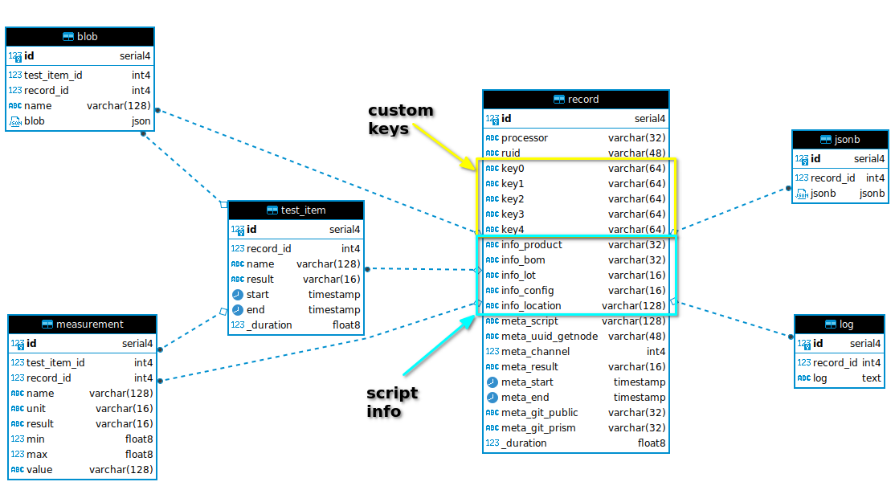
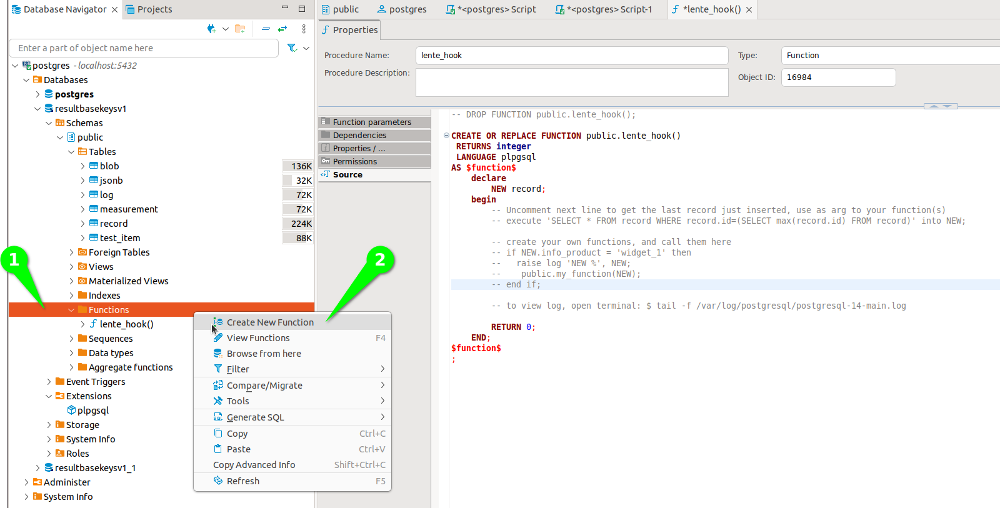
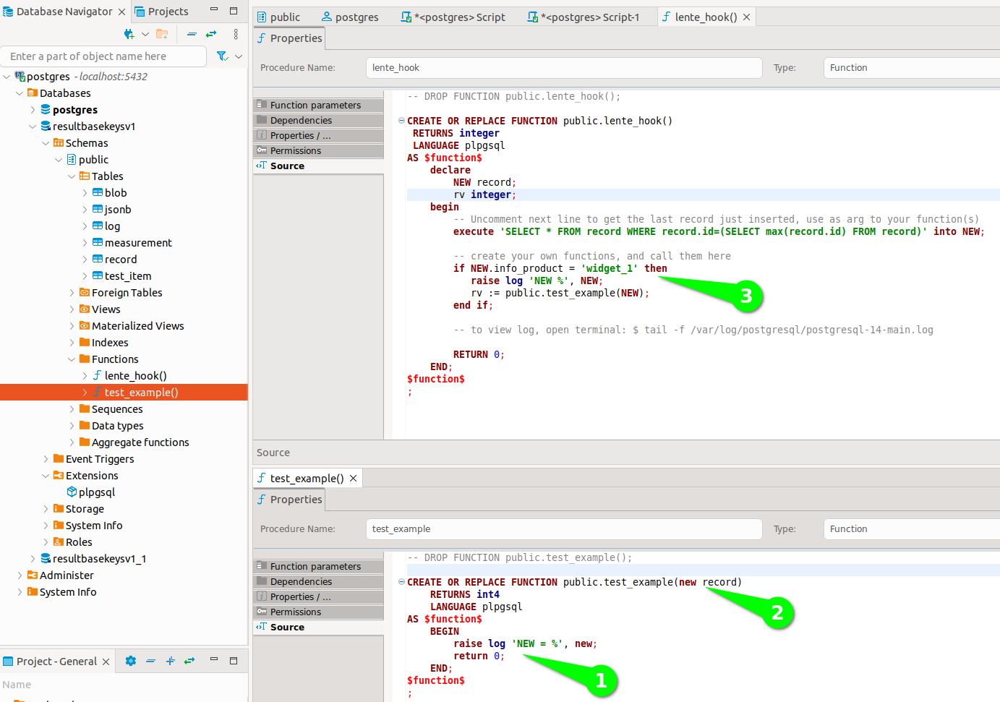
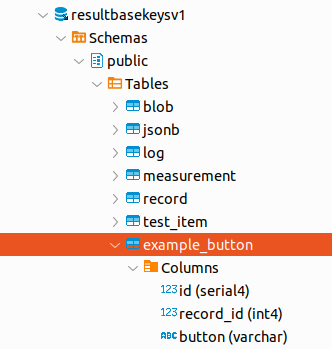

Results Database¶
All things databse related.
Database Schema¶
This diagram shows the dB schema and relationships,
All of the tables are connected together thru the (foriegn key) record_id.
record¶
This represents the instance of a test that ran. Its a top level record that captures all the conditions of the test when it ran.
The info_* section are fields that are set via the Prism Configuration and are related to the the info section of the script.
The key# items are indexed keys that your script can set via add_key() api. These keys should be used as high level identifiers for making SQL queries. For example, a product serial number should probably be a key so that you can find the test record for a product serial number. Typically these key# fields are not known until the test is run and retrieves the information. For example, a key might be a microcontroller UID (MAC address) which is read at test time.
test_item¶
For each test record there will multiple test_items as directed by the script.
Note that the name of the test item should be treated like a serial number and should be “formatted”. See naming proposals.
measurement¶
For each test_item there may be multiple measurements. measurement has two foreign keys, record and test_item.
Note that the name of the measurement should be treated like a serial number and should be “formatted”. See naming proposals. Prism measurement() API enforces good naming.
blob¶
For each test_item there may be multiple JSON blob. blob has two foreign keys, record and test_item.
log¶
A large string that represents the log_bullet() messages that appear in the GUI. This represents what was shown to the operator during the test.
jsonb¶
NOTE this feature is experimental.
A custom JSON object that will be stored as a jsonb object which Postgres treats special (see Postgres documentation).
Using jsonb is provided to allow one to essentially create their own “tables” in JSON.
SQL Queries¶
Lente provides only basic test result monitoring or “dashboarding”. Because all Prism results end up in an SQL database, adding dashboarding relevant for your business is easy. The difficult part is choosing among the many 3rd party options.
There are two classes of tools, those for developing SQL scripts, exploring the database schema, and those for creating dashboards.
An example of a dashboarding tool is,
An example of an SQL Tool is,
Note that the Lente Details console page has an SQL window at the bottom which shows the SQL query that Lente is using, and may provide a starting point for your own queries.
Stats For All Measurements¶
An SQL script that will list all the measurements for a given set of records that meet the filtering criteria,
-- Measurement Stats for all test measurements
select m.name,
count(m.value) count_val,
AVG(CAST(m.value as Float)) avg_val,
stddev(CAST(m.value as Float)) std_val,
min(CAST(m.value as Float)) min_val,
max(CAST(m.value as Float)) max_val
from measurement m join record on m.record_id = record.id
where m.unit not in ('STR', 'Boolean', 'None')
-- add/remove filters as required, see schema for fields
AND record.info_product = 'myproduct'
AND record.info_bom = 'mybom'
AND record.info_lot = 'mylot'
AND record.info_location = 'mylocation'
AND record.meta_result = 'PASS'
AND record.meta_script = 'public/prism/scripts/mystage/myname.scr'
AND record.meta_start >= '2023-11-10'
AND record.meta_start <= '2023-11-15'
group by m.name
order by m.name
Test Item Duration¶
An SQL script that will list all the stats for Test Item durations (how long did the test take),
-- Test Time for all test measurements
select ti.name,
count(ti._duration) count_val,
AVG(CAST(ti._duration as Float)) avg_val,
stddev(CAST(ti._duration as Float)) std_val,
min(CAST(ti._duration as Float)) min_val,
max(CAST(ti._duration as Float)) max_val
from test_item ti join record on ti.record_id = record.id
where record.info_product = 'myproduct'
-- add/remove filters as required, see schema for fields
AND record.info_bom = 'mybom'
AND record.info_lot = 'mylot'
AND record.info_location = 'mylocation'
AND record.meta_result = 'PASS'
AND record.meta_script = 'public/prism/scripts/mystage/myname.scr'
AND record.meta_start >= '2023-11-10'
AND record.meta_start <= '2023-11-15'
and CAST(ti._duration as Float) > 0.2
group by ti.name
order by ti.name
Lente dB Hook¶
See Postgres Documentation regarding Functions. PostgreSQL functions, also known as Stored Procedures, allow you to carry out operations that would normally take several queries and round trips in a single function within the database.
When each record is added to the dB, Lente will call Postgres dB Function, public.lente_hook(). The purpose of this function stub is to allow you to add your own functions to be called when a new Result record is added to the dB.
CREATE FUNCTION lente_hook()
RETURNS int4
LANGUAGE plpgsql
AS $function$
declare
NEW record;
begin
-- Uncomment next line to get the last record just inserted, use as arg to your function(s)
-- execute 'SELECT * FROM record WHERE record.id=(SELECT max(record.id) FROM record)' into NEW;
-- create your own functions, and call them here
-- if NEW.info_product = 'widget_1' then
-- raise log 'NEW %', NEW;
-- public.my_function(NEW);
-- end if;
-- to view log, open terminal: $ tail -f /var/log/postgresql/postgresql-14-main.log
RETURN 0;
END;
$function$
;
Review the comments in the snippet, as well as how to add logging statements for debugging. While developing your script you may also want to review Lente’s log as it will also show helpful information.
If lente_hook() returns a non-zero value, Lente will log error the value into its log.
Note if NEW.info_product = ‘widget_1’ then, this is an example of having your scripts called based on the product. You can add more qualifiers as desired based on record fields. A common use is to only call the Function if the result is a PASS (or FAIL).
Adding Your Own Function¶
The first step is to add your own Function and test it. Using dBeaver,
Open up the Functions tab. Note that stub function lente_hook() should already be installed.
Right Click on Functions and Create New Function.
You will be asked to create a name, select a Language and return type. The options used in the image are typical.
dBeaver will create an empty Function for you, you will need to add return 0, and a logging statement is added just for testing.
You will need to add parameter for the last record inserted that lente_hook() will send.
Modify lente_hook() to call your new function.
Export Measurement Example¶
Here is an example function that exports a measurement into a new table only for records that PASS and are from product “widget_1”.
First, create your new table. Your script could create the table if it doesn’t exist. Note the table has a reference to the record id. id/record_id are not required but are good practice.
The script that populates this new table,
-- DROP FUNCTION public.test_example();
CREATE OR REPLACE FUNCTION public.test_example(new record)
RETURNS int4
LANGUAGE plpgsql
AS $function$
declare
meas_button VARCHAR(10);
begin
-- if the DUT result is a PASS
if new.meta_result = 'PASS' then
-- get button the user pressed
meas_button := (select measurement.value from measurement
where new.id = measurement.record_id and
measurement.name = 'example.prod_v0.tst00xx.TST003_Buttons.button');
raise log 'Button %', meas_button;
-- export to my new table
INSERT INTO example_button(id, record_id, button)
VALUES(default, new.id, meas_button);
end if;
return 0;
END;
$function$
;
The lente_hook() that calls the above function,
-- DROP FUNCTION public.lente_hook();
CREATE OR REPLACE FUNCTION public.lente_hook()
RETURNS integer
LANGUAGE plpgsql
AS $function$
declare
NEW record;
rv integer;
begin
-- Uncomment next line to get the last record just inserted, use as arg to your function(s)
execute 'SELECT * FROM record WHERE record.id=(SELECT max(record.id) FROM record)' into NEW;
-- create your own functions, and call them here
if NEW.info_product = 'widget_1' then
raise log 'NEW %', NEW;
rv := public.test_example(NEW);
end if;
-- to view log, open terminal: $ tail -f /var/log/postgresql/postgresql-14-main.log
RETURN 0;
END;
$function$
;